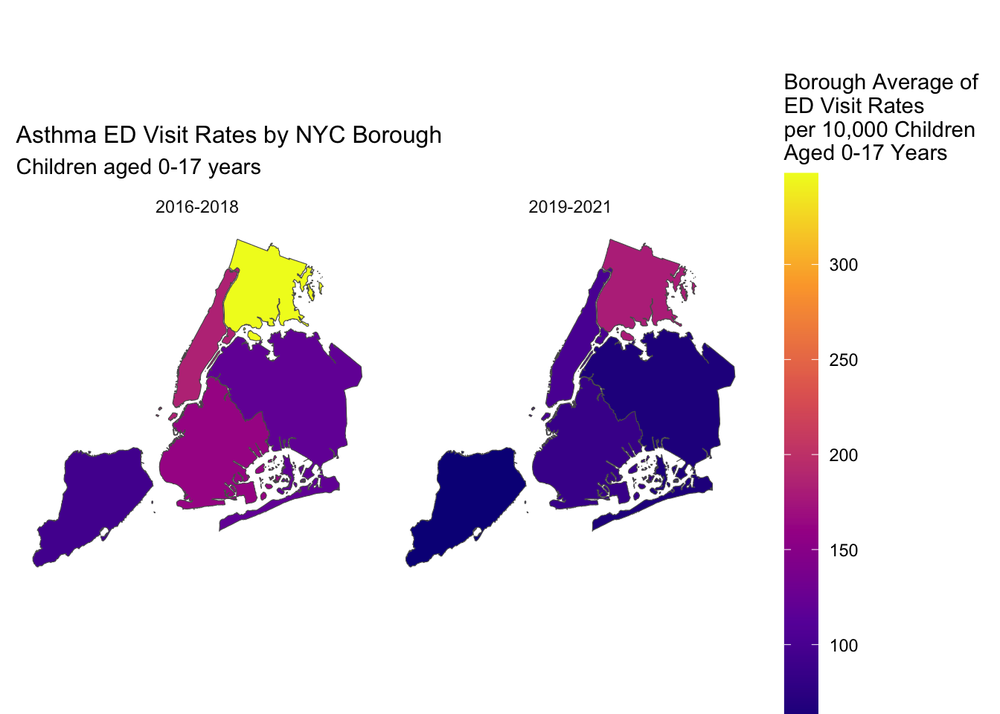
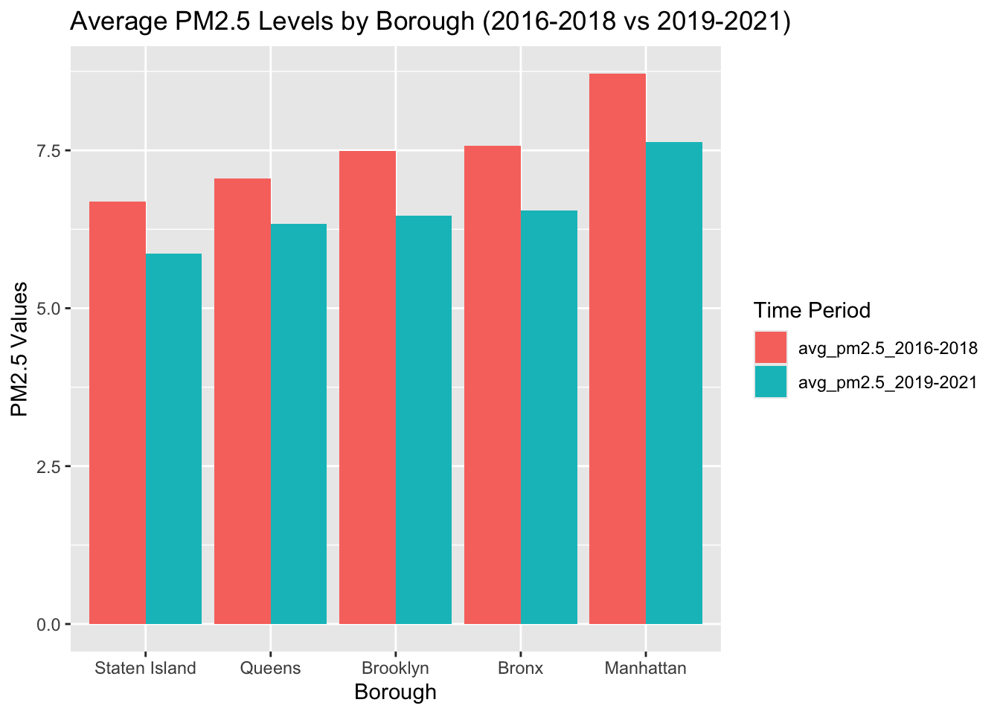
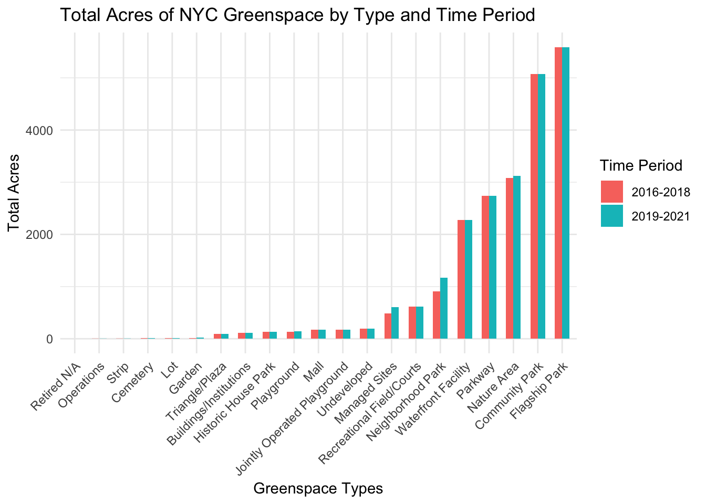
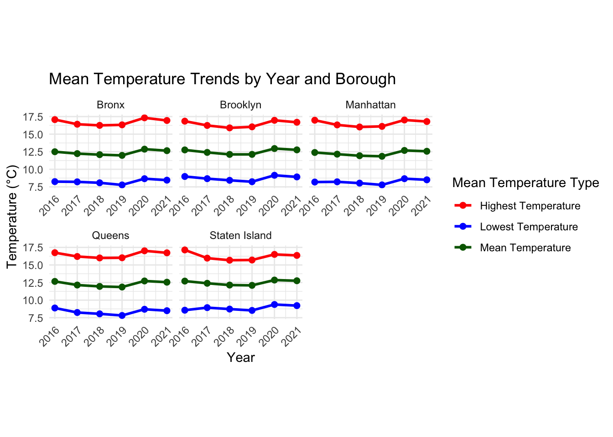
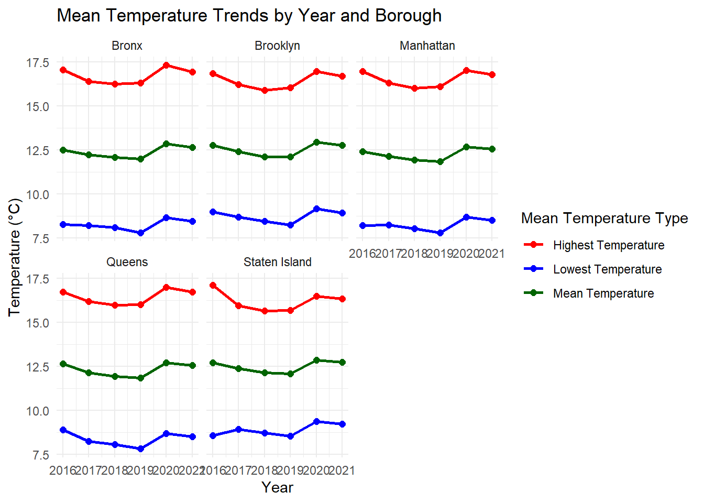

Exploratory Data Analysis
ED Visits and Hospitalizations between 2016-2018 and 2019-2021
# Load ED data for 2016-2018
ed_2016_2018 =
read_csv("data/ed_2016_2018.csv")
# Load ED data for 2019-2021
ed_2019_2021 =
read_csv("data/ed_2019_2021.csv")
# Load NYC zipcode shapefile
nyc_zip_sf <- st_read("shapefiles/geo_export_8df5c38c-c74c-4840-9d00-da16c0201e07.shp", quiet = TRUE)
# Combine datasets
all_data <- bind_rows(
ed_2016_2018 %>% mutate(period = "2016-2018"),
ed_2019_2021 %>% mutate(period = "2019-2021")
)
# Create borough averages for both indicators
borough_data <- all_data %>%
group_by(borough, period, indicator) %>%
summarize(avg_rate = mean(zip_code_rate, na.rm = TRUE))
# Create the map_data
borough_data <- borough_data %>%
rename(boro_name = borough)
map_data <- nyc_zip_sf %>%
left_join(borough_data, by = "boro_name")Emergency Department Visit Rates per 10,000 children (Aged 0-17 Years)
| Borough | 2016-2018 | 2019-2021 | % Change |
|---|---|---|---|
| Bronx | 347.7 | 180.7 | -48.0 |
| Manhattan | 184.4 | 100.5 | -45.5 |
| Brooklyn | 162.2 | 85.0 | -47.6 |
| Queens | 119.8 | 63.6 | -46.9 |
| Staten Island | 93.7 | 52.9 | -43.5 |
For ED visits, the Bronx had notably higher rates than other boroughs in both periods, with 347.7 and 180.7 per 10,000 children, respectively. All boroughs experienced substantial decreases between 2016-2018 and 2019-2021, ranging from about 43% to 48%. Despite these decreases, the Bronx’s 2019-2021 rate of 180.7 remained higher than any other borough’s rates from 2016-2018.
# Create ED Visits Map
ed_plot <- ggplot() +
geom_sf(data = filter(map_data, indicator == "ed_visits_rate"),
aes(fill = avg_rate)) +
facet_wrap(~period) +
scale_fill_viridis_c(
name = "Borough Average of\nED Visit Rates\nper 10,000 Children\nAged 0-17 Years",
option = "plasma"
) +
theme_minimal() +
labs(title = "Asthma ED Visit Rates by NYC Borough",
subtitle = "Children aged 0-17 years") +
theme(
plot.title = element_text(size = 12),
legend.position = "right",
legend.key.height = unit(2, "cm"),
axis.text = element_blank(),
axis.ticks = element_blank(),
panel.grid = element_blank()
)
# Display plot
ed_plot
Looking at the ED visit rates map across the two time periods (2016-2018 and 2019-2021), we can observe several key patterns:
- There appears to be a general decrease in ED visit rates from 2016-2018 to 2019-2021 across most NYC boroughs, as indicated by the darker purple colors in the later period.
- The Bronx (the northernmost borough) shows notably higher ED visit rates than other boroughs in both time periods, with rates exceeding 300 per 10,000 children aged 0-17 years in 2016-2018.
- Manhattan and Brooklyn by comparison appear to have moderate rates, while Staten Island (the southernmost borough) consistently shows lower ED visit rates in both periods.
The most striking change between the two periods is the apparent reduction in ED visits during 2019-2021, which could potentially be related to the COVID-19 pandemic’s impact on healthcare utilization patterns.
Asthma hospitalization rate per 10,000 children (aged 0-17 years)
| Borough | 2016-2018 | 2019-2021 | % Change |
|---|---|---|---|
| Bronx | 58.5 | 36.8 | -37.1 |
| Manhattan | 35.5 | 24.0 | -32.4 |
| Brooklyn | 27.5 | 16.5 | -40.0 |
| Staten Island | 21.5 | 13.1 | -39.1 |
| Queens | 20.6 | 13.2 | -35.9 |
For hospitalizations, a similar pattern emerged compared to ED visit rates, with the Bronx having the highest rates at 58.5 and 36.8 per 10,000 children in the two periods. All boroughs showed considerable decreases between 2016-2018 and 2019-2021, ranging from approximately 32% to 40%. Queens and Staten Island consistently had the lowest hospitalization rates in both periods.
# Create Hospitalizations Map
hosp_plot <- ggplot() +
geom_sf(data = filter(map_data, indicator == "hosp_rate"),
aes(fill = avg_rate)) +
facet_wrap(~period) +
scale_fill_viridis_c(
name = "Borough Average of\nHospitalization Rates\nper 10,000 Children\nAged 0-17 Years",
option = "plasma"
) +
theme_minimal() +
labs(title = "Asthma Hospitalization Rates by NYC Borough",
subtitle = "Children aged 0-17 years") +
theme(
plot.title = element_text(size = 12),
panel.grid = element_blank(),
axis.text = element_blank(),
axis.ticks = element_blank(),
axis.title = element_blank()
)
# Display plot
hosp_plot
Considering hospitalization rates across the two time periods (2016-2018 and 2019-2021), there are notable patterns:
- Similar to ED visits, there appears to be a general decrease in hospitalization rates from 2016-2018 to 2019-2021 across NYC boroughs, as shown by the darker purple colors in the later period.
- The Bronx again shows notably higher hospitalization rates compared to other boroughs in both periods, reaching over 50 per 10,000 children aged 0-17 years in 2016-2018.
- Geographic disparities persist in both periods, with Staten Island consistently showing lower hospitalization rates.
- When compared to the ED visit rates, the hospitalization rates are notably lower (scale of 0-50 versus 0-300), suggesting that while many children visit the ED for asthma, a smaller proportion require hospitalization.
Overall, the consistent geographic disparities in ED visits and hospitalizations, particularly the higher rates in the Bronx, confirm the unequal distribution of child asthma burden across New York City. This suggests underlying socioeconomic and/or environmental factors affecting childhood asthma rates across different parts of the city.
Fine Particulate Matter (PM2.5)
# Load PM data
particulate_matter =
read_csv("data/Air_Quality_20231208.csv")
# Produce tidied PM dataset for analysis
tidy_analysis_pm =
particulate_matter |>
janitor::clean_names() |>
mutate(
unique_id = as.character(unique_id),
indicator_id = as.character(indicator_id),
geo_join_id = as.character(geo_join_id)) |>
filter(name == "Fine particles (PM 2.5)") |>
filter(time_period %in% c("Annual Average 2016", "Annual Average 2017",
"Annual Average 2018", "Annual Average 2019",
"Annual Average 2020", "Annual Average 2021")) |>
filter(geo_type_name == "Borough") |>
select(-unique_id, -indicator_id, -start_date) |>
rename(borough = geo_place_name) |>
mutate(
period = case_when(
time_period %in% c("Annual Average 2016", "Annual Average 2017", "Annual Average 2018") ~ "2016-2018",
time_period %in% c("Annual Average 2019", "Annual Average 2020", "Annual Average 2021") ~ "2019-2021"
)
) |>
group_by(borough, period) |>
summarize(
average_pm2.5 = mean(data_value, na.rm = TRUE),
.groups = "drop"
) |>
pivot_wider(
names_from = period,
values_from = average_pm2.5,
names_prefix = "avg_pm2.5_"
)Average PM2.5 Levels (μg/m³) Between 2016-2018 and 2019-2021
# Plot of average PM2.5 levels by borough between 2016-2018 and 2019-2021
tidy_analysis_pm |>
pivot_longer(cols = -borough, names_to = "Year_Group", values_to = "PM2.5") |>
mutate(borough = factor(borough, levels = unique(borough[order(PM2.5)]))) |>
ggplot(aes(x = borough, y = PM2.5, fill = Year_Group)) +
geom_bar(position = "dodge", stat = "identity") +
labs(
title = "Average PM2.5 Levels by Borough (2016-2018 vs 2019-2021)",
x = "Borough",
y = "PM2.5 Values",
fill = "Year Group"
) 
Average PM.25 levels across boroughs: 2016-2018 vs 2019-2021
# Print PM2.5 Summary
tidy_analysis_pm_diff <-
tidy_analysis_pm |>
mutate(pm2.5_difference = `avg_pm2.5_2016-2018` - `avg_pm2.5_2019-2021`)
knitr::kable(tidy_analysis_pm_diff, col.names = c("Borough", "Average PM2.5 (2016-2018)", "Average PM2.5 (2019-2021)", "Difference in PM2.5 Levels"))| Borough | Average PM2.5 (2016-2018) | Average PM2.5 (2019-2021) | Difference in PM2.5 Levels |
|---|---|---|---|
| Bronx | 7.573333 | 6.553333 | 1.0200000 |
| Brooklyn | 7.490000 | 6.470000 | 1.0200000 |
| Manhattan | 8.716667 | 7.626667 | 1.0900000 |
| Queens | 7.060000 | 6.336667 | 0.7233333 |
| Staten Island | 6.683333 | 5.870000 | 0.8133333 |
PM2.5 levels demonstrated consistent declines across all NYC boroughs between 2016-2018 and 2019-2021, as shown in both the bar plot and supporting data table. Manhattan maintained the highest concentrations in both periods (8.72 and 7.63 μg/m³ respectively), which is notably higher than other boroughs as evident by the tallest bars in the graph. The magnitude of improvement was remarkably uniform in the Bronx and Brooklyn, with the table showing identical reductions of 1.02 μg/m³ for both boroughs, while Queens experienced the smallest decrease at 0.72 μg/m³. Staten Island consistently maintained the lowest PM2.5 levels among all boroughs, with averages dropping from 6.68 to 5.87 μg/m³, as evidenced by the shortest bars in the plot.
PM2.5 Levels by United Hospital Fund (UHF42) Neighborhoods, 2016-2018 vs. 2019-2021
# Load NYC geospatial data
geography =
read_excel("data/geoid_borough_name_nyc.xlsx") |>
rename(geo_join_id = ID) |>
mutate(geo_join_id =
as.character(geo_join_id))
# Tidy dataset for geospatial PM analysis
tidy_uhf42_pm =
particulate_matter |>
janitor::clean_names() |>
mutate(
unique_id = as.character(unique_id),
indicator_id = as.character(indicator_id),
geo_join_id = as.character(geo_join_id)) |>
filter(name == "Fine particles (PM 2.5)") |>
filter(time_period %in% c("Annual Average 2016", "Annual Average 2017",
"Annual Average 2018", "Annual Average 2019",
"Annual Average 2020", "Annual Average 2021")) |>
filter(geo_type_name == "UHF42") |>
select(-unique_id, -indicator_id, -start_date) |>
mutate(
period = case_when(
time_period %in% c("Annual Average 2016", "Annual Average 2017", "Annual Average 2018") ~ "2016_2018",
time_period %in% c("Annual Average 2019", "Annual Average 2020", "Annual Average 2021") ~ "2019_2021"
)
) |>
group_by(geo_place_name, geo_join_id, period) |>
summarize(
average_pm2.5 = mean(data_value, na.rm = TRUE),
.groups = "drop"
) |>
pivot_wider(
names_from = period,
values_from = average_pm2.5,
names_prefix = "avg_pm2.5_"
)
# Load shapefiles map for UHF data
uhf42_map <- st_read("data/UHF_42_DOHMH_2009.shp", quiet = TRUE)
tidy_uhf42_pm <-
tidy_uhf42_pm |>
rename(UHFCODE = geo_join_id) |>
mutate(
UHFCODE = as.double(UHFCODE))
# Combine geospatial data and PM data
map_uhf42 <-
uhf42_map |>
left_join(tidy_uhf42_pm, by = "UHFCODE") |>
pivot_longer(cols = starts_with("avg_pm2.5_"),
names_to = "time_period",
values_to = "avg_pm2.5")
# Produce heat map
heat_map_pm2.5 <- ggplot() +
geom_sf(data = map_uhf42, aes(fill = avg_pm2.5)) +
facet_wrap(~time_period, ncol = 2) +
scale_fill_viridis_c(option = "plasma", na.value = "grey50") +
labs(
title = "PM2.5 (ug/m3) Levels by UHF42 Neighborhood",
fill = "PM2.5"
) +
theme_minimal() +
theme(
plot.title = element_text(size = 12),
legend.position = "right",
legend.key.height = unit(2, "cm"),
panel.grid = element_blank(),
axis.text = element_blank(),
axis.ticks = element_blank(),
axis.title = element_blank()
)
# Show heat map for PM2.5
heat_map_pm2.5Looking at the PM2.5 levels across the two time periods (2016-2018 and 2019-2021), we can observe a general decrease in PM2.5 concentrations across the majority of UHF42 neighborhoods, as shown by the more prevalent darker purple coloring in the 2019-2021 map indicating lower levels. Midtown Manhattan shows consistently high PM2.5 levels across both time periods, appearing as yellow and orange areas on the maps, while Staten Island maintains the lowest PM2.5 levels across all boroughs, shown by consistent dark purple coloring.
The marked improvement in air quality from 2016-2018 to 2019-2021 likely reflects the impact of the COVID-19 pandemic, which resulted in significantly reduced traffic and industrial pollution during this period.
Greenspace
# Load greenspace data
greenspace_clean = read_csv("./data/Parks_Properties_20241126.csv", na = c("NA", ".", "")) |>
janitor::clean_names() |>
mutate(
borough = case_match(borough, #renamed borough according to data dictionary
"R" ~ "Staten Island",
"Q" ~ "Queens",
"X" ~ "Bronx",
"B" ~ "Brooklyn",
"M" ~ "Manhattan"),
typecategory = as.factor(typecategory), #converted char variables into factors
borough = as.factor(borough)) |>
separate(acquisitiondate, into = c("year", "month", "day"), sep = "-") |>
select(year, borough, acres, typecategory) |>
filter(year < 2022 | is.na(year))Borough and Year Comparison
# Load 2016-2018 dataset
dataset1_gs = greenspace_clean |>
filter(year < 2019 | is.na(year)) |>
group_by(year, borough) |>
summarise(avg_acres_per_yr_bor = mean(acres, na.rm = TRUE), .groups = "drop")
dataset1_gs_calc = dataset1_gs |>
group_by(borough) |>
summarise(acres_sum = sum(avg_acres_per_yr_bor, na.rm = TRUE), .groups = "drop") |>
mutate(year_group = "2016-2018")
# Load 2019-2021 dataset
dataset2_gs = greenspace_clean |>
filter(year < 2022 | is.na(year)) |>
group_by(year, borough) |>
summarise(avg_acres_per_yr_bor = mean(acres, na.rm = TRUE), .groups = "drop")
dataset2_gs_calc = dataset2_gs |>
group_by(borough) |>
summarise(acres_sum = sum(avg_acres_per_yr_bor, na.rm = TRUE), .groups = "drop") |>
mutate(year_group = "2019-2021")
# Combine datasets
total_acres = bind_rows(dataset1_gs_calc, dataset2_gs_calc)
# Total acres dataset
Greenspace_data = total_acres |>
pivot_wider(names_from = year_group,
values_from = acres_sum)
# Produce plot of greenspace distribution across NYC boroughs
ggplot(total_acres, aes(x = reorder(borough, acres_sum), y = acres_sum, fill = year_group)) +
geom_bar(stat = "identity", position = "dodge", alpha = 0.7) +
labs(x = "Borough", y = "Greenspace (Total Acres)", title = "Greenspaces Across Borough by Year Group") +
theme_minimal()
Analysis of greenspace distribution across NYC boroughs shows consistent patterns between 2016-2018 and 2019-2021, with notable differences in total acreage between boroughs. Staten Island maintained substantially higher greenspace coverage than other boroughs in both periods, reaching approximately 3,000 total acres in 2019-2021. Queens ranked second with around 2,200 acres, while Brooklyn and Manhattan showed moderate levels of greenspace at approximately 1,800 acres each.
The Bronx consistently had the lowest greenspace coverage, though it showed a slight increase from around 1,100 acres in 2016-2018 to 1,200 acres in 2019-2021. The ranking of boroughs based on greenspace coverage was relatively consistent across both time periods, indicating fairly constant disparities in greenspace access over the time periods of interest.
Greenspace increase
| Borough | 2016-2018 | 2019-2021 | Difference |
|---|---|---|---|
| Staten Island | 2812.520 | 3071.240 | 258.720 |
| Bronx | 1130.236 | 1249.861 | 119.625 |
| Queens | 2171.277 | 2182.771 | 11.494 |
| Brooklyn | 1794.986 | 1795.942 | 0.956 |
| Manhattan | 1715.288 | 1715.633 | 0.345 |
Examining the changes in greenspace between 2016-2018 and 2019-2021, the data reveals variations in greenspace across boroughs and time periods. Staten Island exhibited the most significant increase, adding 258.720 acres of greenspace, followed by the Bronx with an addition of 119.625 acres. Queens showed a modest increase of 11.494 acres, while Brooklyn and Manhattan experienced minimal changes with increases of only 0.956 and 0.345 acres respectively. These differences may reflect differences in greenspace development priorities across the city’s boroughs during this period.
Greenspace Types
# Calculate mean acres for each type category across all years
types_nyc = greenspace_clean |>
select(-borough) |>
group_by(typecategory) |>
summarise(acres_tp = mean(acres, na.rm = TRUE), .groups = "drop")
# Process data for 2016-2018 period
type1A = greenspace_clean |>
filter(year < 2019 | is.na(year)) |>
group_by(year, borough, typecategory) |>
summarise(avg_acres_per_yr_bor = mean(acres, na.rm = TRUE), .groups = "drop")
# Calculate total acres by borough and type for 2016-2018
type1B = type1A |>
group_by(borough, typecategory) |>
summarise(acres_sum = sum(avg_acres_per_yr_bor, na.rm = TRUE), .groups = "drop") |>
mutate(year_group = "year1") #2016-2018
# Process data for 2019-2021 period
type2A = greenspace_clean |>
filter(year < 2022 | is.na(year)) |>
group_by(year, borough, typecategory) |>
summarise(avg_acres_per_yr_bor = mean(acres, na.rm = TRUE), .groups = "drop")
# Calculate total acres by borough and type for 2019-2021
type2B = type2A |>
group_by(borough, typecategory) |>
summarise(acres_sum = sum(avg_acres_per_yr_bor, na.rm = TRUE), .groups = "drop") |>
mutate(year_group = "year2") #2019-2021
# Combine both time periods and calculate total acres by type
binded = bind_rows(type1B, type2B) |>
group_by(typecategory, year_group) |>
summarise(acres_total = sum(acres_sum, na.rm = TRUE))
# Create bar plot comparing greenspace types between periods
binded |>
mutate(year_group = case_match(year_group,
"year1" ~ "2016-2018",
"year2" ~ "2019-2021")) |>
ggplot(aes(x = reorder(typecategory, acres_total), y = acres_total, fill = year_group)) +
geom_bar(stat = "identity", position = "dodge", width = 0.6) +
labs(x = "Greenspace Types", y = "Total Acres", title = "Total Acres of NYC Greenspace by Type and Year Group") +
theme_minimal() +
theme(axis.text.x = element_text(angle = 45, vjust = 1, hjust = 1))
Analysis of greenspace types across NYC reveals flagship parks as the dominant category, representing the largest total acreage in both 2016-2018 and 2019-2021 periods. Community parks and nature areas represent the second and third largest greenspace types respectively in both time periods. The distribution of greenspace types remained largely consistent between the two time periods, with minimal changes in most categories.
Smaller greenspace types such as gardens, plazas, and historic house parks account for relatively minimal acreage in comparison to the larger park categories. Most categories showed slight increases or remained stable across the two time periods, which suggests efforts towards the preservation and/or expansion of various greenspace types throughout the city.
| Greenspace Type | 2016-2018 | 2019-2021 | Difference |
|---|---|---|---|
| Neighborhood Park | 910.009 | 1169.625 | 259.616 |
| Managed Sites | 483.304 | 602.398 | 119.094 |
| Nature Area | 3084.626 | 3117.486 | 32.860 |
| Undeveloped | 190.171 | 191.357 | 1.186 |
| Waterfront Facility | 2277.161 | 2277.691 | 0.530 |
| Garden | 17.201 | 17.600 | 0.399 |
| Playground | 137.855 | 138.154 | 0.299 |
Between 2016-2018 and 2019-2021, neighborhood parks showed the largest expansion with an increase of 259.617 acres, followed by managed sites which grew by 119.095 acres. Nature areas experienced a notable increase of 32.860 acres, while undeveloped spaces, waterfront facilities, gardens, and playgrounds showed minimal changes, with increases ranging from 0.299 to 1.186 acres. The remaining 14 greenspace types maintained their original acreage with no changes observed during this period. This pattern indicates that recent greenspace development has primarily focused on expanding neighborhood parks and managed sites while preserving existing spaces in other categories.
Top 3 Greenspace Types (Total Acres) Across Boroughs
| Borough | Highest | Second Highest | Third Highest |
|---|---|---|---|
| Bronx | Flagship Park (1532.62) | Parkway (585.51) | Nature Area (312.15) |
| Brooklyn | Community Park (1487.77) | Parkway (827.95) | Flagship Park (571.31) |
| Queens | Flagship Park (1631.46) | Waterfront Facility (1093.79) | Community Park (973.11) |
| Manhattan | Community Park (1098.39) | Flagship Park (1094.31) | Neighborhood Park (207.73) |
| Staten Island | Nature Area (1690.97) | Community Park (1371.96) | Flagship Park (760.79) |
The table shows the top three greenspace types by total acreage across New York City’s five boroughs, revealing distinct patterns in how each borough maintains its green spaces. Staten Island has the largest single greenspace with a Nature Area of 1690.97 acres, showing a focus on preserving natural environments. Manhattan maintains relatively smaller spaces, with its largest being a Community Park at 1098.39 acres. The outer boroughs feature major destination parks called Flagship Parks - which NYC Parks targets for long-term planning and community input.
The Bronx and Brooklyn both incorporate significant Parkway acreage as part of New York State’s historic system of landscaped roads. Queens stands out with the largest Flagship Park (1631.46 acres), while Brooklyn shows diversity in its green spaces with both large Community Parks and Parkways.
Temperature
# Load raw temperature data for each borough
manhattan = read_csv("data/manhattan.csv",skip = 3) |>
mutate(Borough = "Manhattan") |>
janitor::clean_names()
bronx = read_csv("data/bronx.csv",skip = 3) |>
mutate(Borough = "Bronx") |>
janitor::clean_names()
brooklyn = read_csv("data/brooklyn.csv",skip = 3) |>
mutate(Borough = "Brooklyn") |>
janitor::clean_names()
queens = read_csv("data/queens.csv",skip = 3) |>
mutate(Borough = "Queens") |>
janitor::clean_names()
staten_island = read_csv("data/staten_island.csv",skip = 3) |>
mutate(Borough = "Staten Island") |>
janitor::clean_names()all_temp = bind_rows(manhattan, bronx, brooklyn, queens, staten_island) |>
mutate(borough = as.factor(borough)) |>
mutate(date = as.Date(time, format = "%d/%m/%Y")) |>
select(time:temperature_2m_mean, borough, date) |>
mutate(years = year(date)) |>
mutate(months = as.Date(paste0(format(date, "%Y-%m"), "-01"), format = "%Y-%m-%d"))
all_temp_borough = all_temp |>
mutate(date = as.Date(time, format = "%d/%m/%Y")) |> # Corrected date format
mutate(data_years = ifelse(year(date) %in% 2016:2018, "2016-2018", "2019-2021")) |>
select(temperature_2m_max:data_years) |>
group_by(data_years, borough) |>
summarise(avg_temperature = mean(temperature_2m_mean, na.rm = TRUE))Monthly Mean temperature by borough
This graph shows the monthly mean temperature change by Borough between 2016 and 2021.
# Monthly Mean temperature
all_temp_month = all_temp |>
group_by(months, borough) |>
summarise(avg_month = mean(temperature_2m_mean, na.rm = TRUE))
ggplot(all_temp_month, aes(x = months, y = avg_month, color = borough)) +
geom_line() +
geom_point() +
labs(
title = "Monthly Mean Temperature (2016-2021) by Borough",
x = "Month",
y = "Average Temperature (°C)",
color = "Borough"
) +
theme_minimal()
Max, Min, Mean temperature trend by year and borough
This 5 plots shows the highest temperature mean, lowest temperature mean, and total mean temperature by year and borough.
# Max, Min, Mean temperature trend by year and borough
mean_temp_year = all_temp |>
group_by(years, borough) |>
summarize(
high_temp = mean(temperature_2m_max, na.rm = TRUE),
low_temp = mean(temperature_2m_min, na.rm = TRUE),
mean_temp = mean(temperature_2m_mean, na.rm = TRUE)
) |>
arrange(years, borough)
long_data <- mean_temp_year |>
pivot_longer(
cols = c(high_temp, low_temp, mean_temp),
names_to = "Temperature_Type",
values_to = "Temperature"
)
ggplot(long_data, aes(x = years, y = Temperature, color = Temperature_Type, group = Temperature_Type)) +
geom_line(size = 1) +
geom_point(size = 2) +
labs(
title = "Mean Temperature Trends by Year and Borough",
x = "Year",
y = "Temperature (°C)",
color = "Mean Temperature Type"
) +
scale_color_manual(
values = c("high_temp" = "red", "low_temp" = "blue", "mean_temp" = "darkgreen"), # Color mapping
labels = c("high_temp" = "Highest Temperature",
"low_temp" = "Lowest Temperature",
"mean_temp" = "Mean Temperature")) +
theme_minimal() +
facet_wrap(~ borough) 
Average temperature change by borough
There has been mean temperature change between years but it is steady overall across the boroughs.
#average temperature table
mean_temp_table = mean_temp_year |>
select(borough, years, mean_temp) |>
pivot_wider(
names_from = borough,
values_from = mean_temp
)
knitr::kable(mean_temp_table)| years | Bronx | Brooklyn | Manhattan | Queens | Staten Island |
|---|---|---|---|---|---|
| 2016 | 12.49891 | 12.75929 | 12.39290 | 12.66175 | 12.70710 |
| 2017 | 12.23123 | 12.40219 | 12.15260 | 12.14411 | 12.39288 |
| 2018 | 12.08466 | 12.11808 | 11.93342 | 11.94959 | 12.14192 |
| 2019 | 11.98082 | 12.12384 | 11.85068 | 11.86000 | 12.09753 |
| 2020 | 12.86639 | 12.95492 | 12.68251 | 12.72459 | 12.85464 |
| 2021 | 12.65096 | 12.76575 | 12.56630 | 12.54767 | 12.75479 |
Average temperature by year group and borough
In terms of analysis by the year group 2016-2018 and 2019-2021. There has been mean temperature increase among all boroughs. Manhattan and Bronx showed the biggest increase.
ggplot(data = all_temp_borough, aes(x = data_years, y = avg_temperature, color = borough)) +
geom_point(size = 3) +
geom_line(aes(group = borough), size = 1) +
labs(title = "Average Temperature by Date Group and Borough",
x = "Date Group",
y = "Average Temperature") +
theme_minimal()